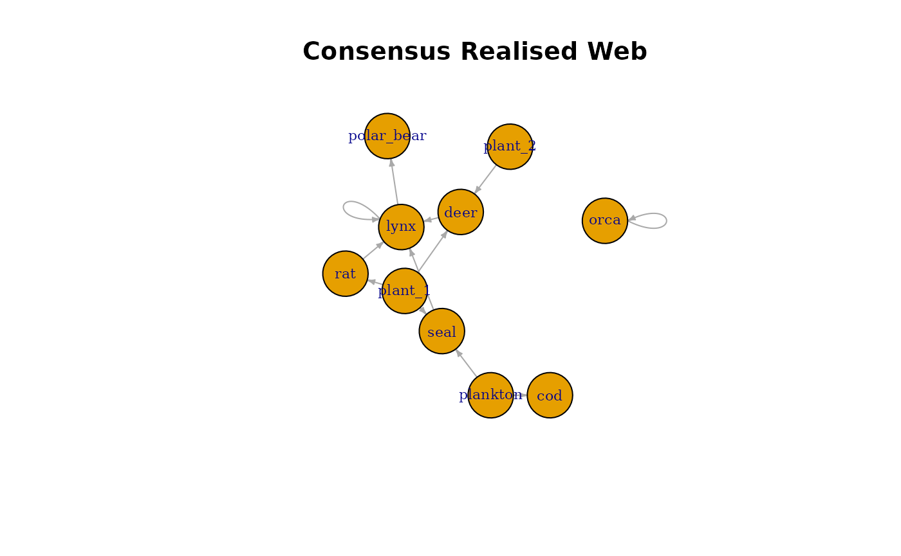
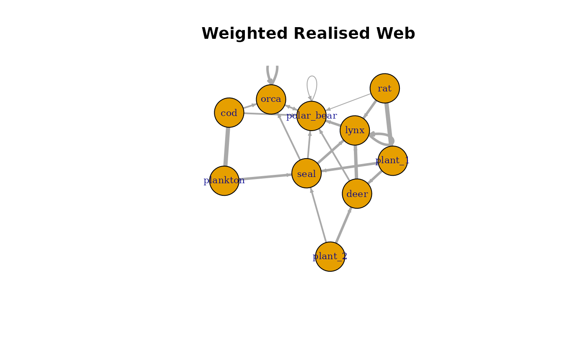

Generating Realised Food Webs
Source:vignettes/pfwim_03_realised_webs.Rmd
pfwim_03_realised_webs.RmdIntroduction
The metaweb contains all trait-compatible interactions, but real
ecological networks typically contain far fewer links. To simulate
realistic food webs, PFWIM provides the function
powerlaw_prey(), which downsamples interactions from the
metaweb according to a power-law prey degree distribution.
This vignette demonstrates how to:
- Generate a metaweb edgelist
- Downsample interactions to create realised webs
- Compare the metaweb and realised networks using igraph
Generate the Metaweb
metaweb_el <- infer_edgelist(
data = traits,
cat_combo_list = feeding_rules,
col_taxon = "species",
certainty_req = "all",
hide_printout = TRUE
)Generating Multiple Realised Webs
The function powerlaw_prey() randomly samples prey for
each consumer according to a power-law distribution, producing networks
that more closely resemble empirical food webs.
Because realised webs are generated via stochastic downsampling, it is often useful to generate multiple network realisations. This allows users to explore variability in network structure and perform simulation-based analyses.
The argument n_samp controls how many realised webs are
generated.
realised_webs <- powerlaw_prey(
el = metaweb_el,
n_samp = 5,
y = 2.5
)The result is a list of edgelists, where each element represents one simulated realised food web.
length(realised_webs)## [1] 5Each entry in the list can be accessed individually.
realised_webs[[1]]## resource consumer
## 9 plankton cod
## 14 plant_2 deer
## 11 plant_1 deer
## 20 seal lynx
## 3 deer lynx
## 16 polar_bear orca
## 7 orca orca
## 2 cod polar_bear
## 22 seal polar_bear
## 4 deer polar_bear
## 19 rat polar_bear
## 12 plant_1 rat
## 10 plankton seal
realised_webs[[2]]## resource consumer
## 9 plankton cod
## 11 plant_1 deer
## 5 lynx lynx
## 20 seal lynx
## 3 deer lynx
## 21 seal orca
## 1 cod orca
## 2 cod polar_bear
## 12 plant_1 rat
## 10 plankton sealCreating a consensus Realised Web
When generating multiple realised food webs, it can be useful to construct a single representative network that summarises the interactions observed across all simulations.
This can be done by counting how frequently each interaction occurs across the simulated webs.
First, combine all realised edgelists into one table. Here the
.id column identifies which realised web each interaction
came from.
library(dplyr)
combined_edges <- dplyr::bind_rows(
lapply(realised_webs, as.data.frame),
.id = "web_id"
)
head(combined_edges)## web_id resource consumer
## 1 web_1 plankton cod
## 2 web_1 plant_2 deer
## 3 web_1 plant_1 deer
## 4 web_1 seal lynx
## 5 web_1 deer lynx
## 6 web_1 polar_bear orcaNext, count how often each interaction appears across the
simulations. The column freq indicates the number of
realised webs in which each interaction occurs.
## resource consumer freq
## 1 cod orca 2
## 2 cod polar_bear 2
## 3 deer lynx 4
## 4 deer polar_bear 2
## 5 lynx lynx 3
## 6 lynx polar_bear 3
## 7 orca orca 3
## 8 orca polar_bear 1
## 9 plankton cod 5
## 10 plankton seal 3
## 11 plant_1 deer 3
## 12 plant_1 rat 5
## 13 plant_1 seal 3
## 14 plant_2 deer 3
## 15 plant_2 seal 2
## 16 polar_bear orca 2
## 17 polar_bear polar_bear 1
## 18 rat lynx 3
## 19 rat polar_bear 1
## 20 seal lynx 3
## 21 seal orca 2
## 22 seal polar_bear 2A simple consensus rule is to keep interactions that appear in at least half of the simulations. This produces a consensus realised web.
Visualising the Consensus Web
library(igraph)
consensus_graph <- graph_from_data_frame(
consensus_el,
directed = TRUE
)
plot(
consensus_graph,
vertex.size = 35,
vertex.label.cex = 0.7,
edge.arrow.size = 0.3,
main = "Consensus Realised Web"
)
Weighted Consensus Web
Instead of filtering interactions, one can construct a weighted
network where edge weights represent interaction frequency. In this
case, the freq column becomes the edge weight, representing
how consistently each interaction occurs across simulations.
weighted_graph <- graph_from_data_frame(
edge_frequency,
directed = TRUE
)
plot(
weighted_graph,
vertex.size = 35,
vertex.label.cex = 0.7,
edge.width = E(weighted_graph)$freq,
edge.arrow.size = 0.3,
main = "Weighted Realised Web"
)